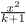

Syntax (autogenerated)
Syntax
| \fraction{...}{...} | |
| {...} | text |
| {...} | text |
Description
Displays a fraction. In first bracket pair the numerator is set, in the second the denominator. It is the same as
\frac
Example
$\fraction{x^2}{k+1}$
- 
You can define also a wide version of the fraction bar, in case the numerator or denominator contain a fraction:
\definemathfraction [widefrac] [margin=.25em]
and then use it as in
\widefrac{a}{\fraction{b}{c}}
which gives
See also
Help from ConTeXt-Mailinglist/Forum
All issues with: